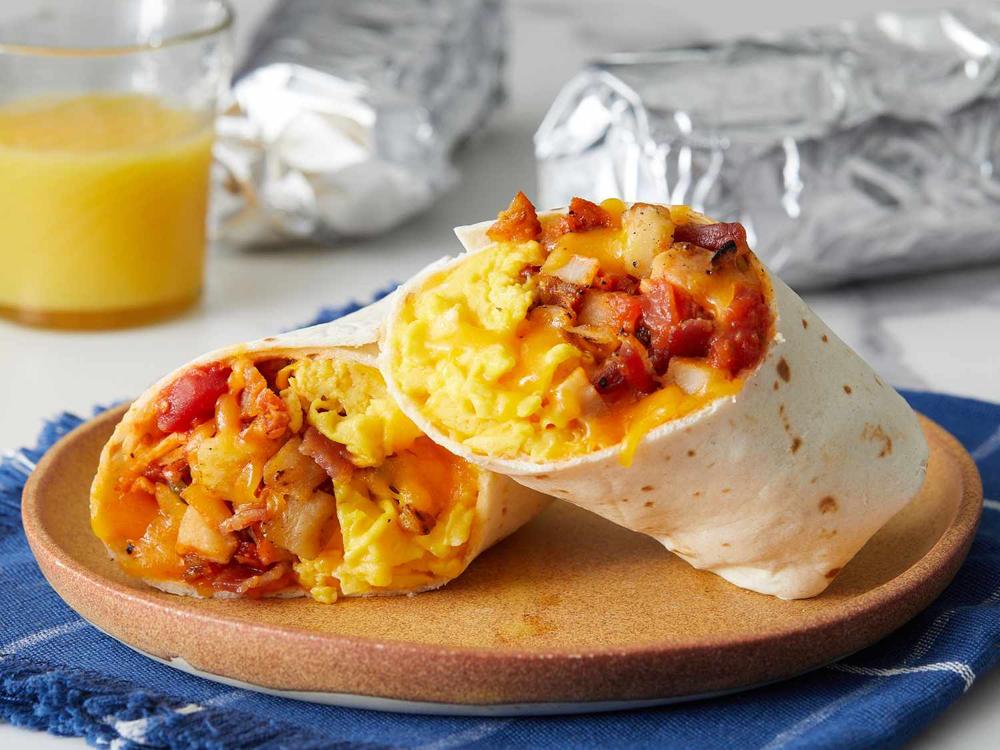

Bacon Breakfast Burritos

Description
This recipe is another good recipe for meal prep, as these freeze very well. They can get a bit soggy upon reheating, so it is highly recommmended
to reheat via toaster oven or an airfryer to give it a nice crispy exterior. This recipe will yield 4 breakfast burritos, each at about 700 calories.
Ingredients
- x8 eggs
- x8 pieces of bacon
- 1/2 cup of bell peppers
- 166g of hash browns
- Green chili salsa
- 1/2 cup of shredded cheese
- chili sauce (optional)
- Tortillas (flour or corn)
Steps
- The first thing we want to do is get all of the insides for the burrito cooked. Preheat the oven to 350. Once ready, scramble and bake 8 eggs into
a glass pan. Make sure to spray the pan surface first as to prevent the eggs from sticking. Bake the eggs for about 25 minutes, stirring every 10 minutes.
- The second step is to cook the bacon. These all can be done in a diffeerent order obviously, but I usually cook the eggs first since they are at a lower temp than the bacon. For the bacon,
I set the oven to 400, and bake the bacon for about 22 minutes. Do not overcrowd the tray, as it will prevent the bacon from crisping properly.
- As you are waiting for the above items to cook, you can go ahead and start on the hash browns and bell peppers. I like to add butter to the hash browns to give them more color/crispiness.
For the bell peppers, add some oil to a pan and fry until they are soft. Once the hash browns and bell peppers are done, set aside into a large bowl.
- Once the bacon is done, you can either cut them on a cutting board, or simply crush them in your hands. If they are crispy, they will break apart easily. Otherwise, a knife and cutting board will be helpful.
- For the scrambled eggs, I usually add about a pinch or so of salt and pepper per egg. In this case, I'll add 8 pinches of each to the scrambled eggs. At this point I also like to add the shredded cheese.
- After stirring the scrambled eggs with salt and pepper, add all of your ingredients to the bowl with the hash browns and bell peppers. Make sure to stir evenly to distribute everything. At this point, I like to add chili sauce to give it a kick.
Refridgerate this mixture, as it will help reduce sogginess in your burritos.
- Place about half of the mixture into a smaller bowl. This smaller bowl is what we will use to evenly fill our burritos.
- Heat a large pan to medium low. Before filling a burrito, place a tortilla on the pan, about a minute for each side. This will help prevent the tortillas from tearing when assembling.
- Take half of the mixture in the smaller bowl and place it into the center of the burrito. Fold in the sides of the tortilla, and then the back, and lastly, roll up the remainder of the tortilla to finish the burrito.
- Once all of the burritos have been assembled, turn the heat up to medium and add about a tbsp of cooking oil.
- Fry each burrito for about a minute on each side. It helps to have them close to each other to keep them upright as they are cooking.
- Once they are slightly browned on each side, they are ready. Wrap each of them in foil and place into the freezer.
- From frozen, these take about 3 minutes to warm up. I like to warm them up, and then pan fry them to make them crispy. An air fryer also works very well. Enjoy!